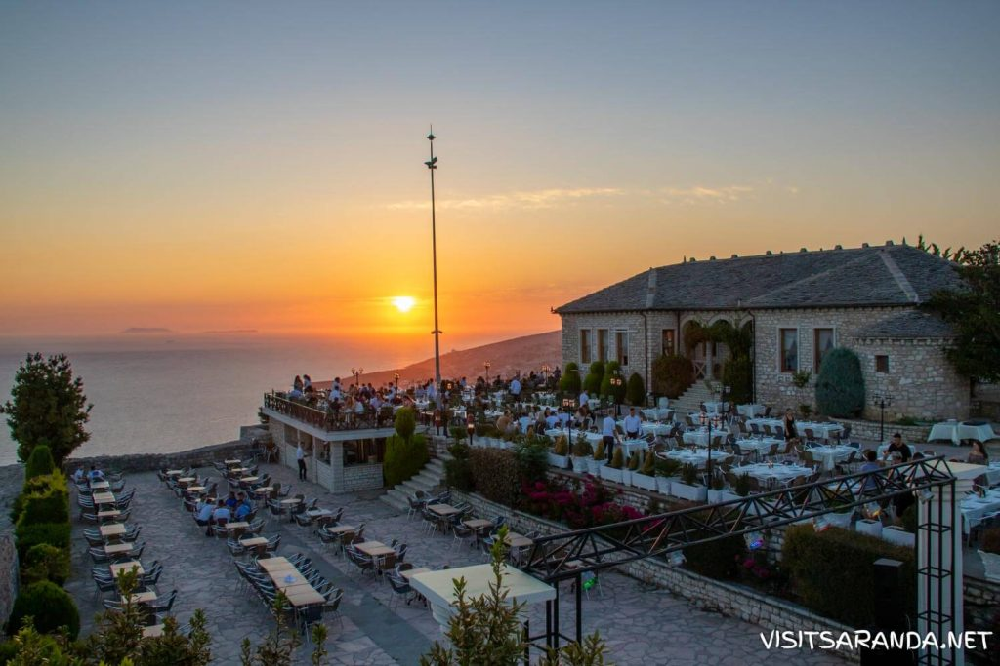

Saranda has a lot to offer, but maybe it simply doesn’t all fit into your schedule. Maybe you’re traveling around Albania for
a week and just passing by, maybe
you’re making a stop with a cruise, or maybe you’re juist coming over for a day trip from Corfu.
If you’re short in time, you might not even have time to do your research.We get that, so we’ve already figured it out for you so you don’t have to.
With our itinerary you’re guaranteed to have the best 24 hours in Saranda!
If you don’t feel like organizing your own trip, you can also book one of the many tours to get the most out of your time in Saranda.
Of course you canskip to any point if you arrive later in the day, but we start our suggested itinerary with breakfast in the morning.
Breakfast At Marini
Marini in Saranda is a favorite among locals, expats, and visitors and their breakfast is simply superb. Weather you go for the Albanian
breakfast (which is a real feast) or any of the western options, like eggs benedict or pancakes, the friendly owners Robert and Gena always make
sure you start your day happy! Marini is located very centrally, just one street up from the boulevard, so you’re immediately ready to start your day.
Take A Bus Or Taxi To Butrint
From the restaurant, walk to the southern end of the promenade where you’ll see a bus stop, while taking in some morning sunshine.
Take the bus to Butrint (150 lek), which leaves hourly on the half from the port, so it should pass by this bus stop about 5-10 minutes later.
There is also a taxi stand in case you prefer to take a taxi.
Visit The Archaeological Site Of Butrint
The ancient city of Butrint can’t be missed, even if you’re in Saranda for a day. Butrint was once an important city and it represents the long
history of the area, dating back to the ancient Greek tribes, followed by the Romans and Ottomans. The archaeological site is a UNESCO World Hertitage
Site and one of the most visited attractions in Albania. The entrance fee is 1000 lek and it takes approximately 2-3 hours to visit the entire site.
Stop For Lunch In Ksamil
Ksamil has some of the best beaches in Albania so we recommend making a stop here for lunch, before heading back to Saranda.
Guvat serves delicious seafood and they have an amazing patio with a fantastic view over the beach, the turquoise water of the Ionian Sea,
and the Ksamil Islands.
Spend Some Time At The Beach
The Albanian Riviera is famous for its beautiful beaches, so we thought you should spend at least some time at the beach while you’re here.
You can either stay the rest of the afternoon in Ksamil or take the bus or a taxi back to Saranda and enjoy some time at one of the many beaches
around town.
Watch The Sunset From Lekursi Castle

With the coast facing east, the sunsets in Saranda are truly breathtaking, and what better place to enjoy the view than from Lekursi Castle.
The 16th century castle is located on the hill behind the town from where you’ll have an amazing view over Saranda and the bay, with Corfu
on the horizon.We recommend taking a taxi to Lekursi Castle as the road goes all the way around the back of the hill and the climb is quiet steep.
If you decide to hike all the way up,this will take you approximately 45 minutes. In that case, we recommend making a short stop for a drink at Natyra.
This restaurant is located next to the road up, on the back of the hill and its panorama terrace offer amazing views over the valley and mountain ranges
on the other side of the town.
Dinner At Haxhi
For dinner we recommend Haxhi, a cosy family-run restaurant, one street up from the promenade, near the entrance of the town.
The restaurant doesn’t only look nicely decorated, the food and service
are also far beyond the standard in Saranda, while the prices are very reasonable. No wonder the expats are among the frequent visitors here!
Have A Xhiro On The Boulevard
Xhiro literally means ‘walk’ in Albanian and this is a national habit in the evening so you’ll see a lot of people strolling around and socializing.
After your dinner you might want to take a little walk too and what better place to do this than on the promenade, which really comes to life in
the evening.
Have The Best Zupa For Dessert
Room for desert? Head to Restaurant Paradise at the southern end of the promenade for the best zupa in town. What…a soup
for desert? Nope, zupa is a delicious desert made of sponge cake, custard and cream, topped with nuts and cocoa. The zupas served at Paradise are handmade in a small family ‘ëmbëltore’ in town, following a generations
old recipe.
Have A Cocktail At Jericho
If you only have 24 hours in Saranda, you really shouldn’t spend the rest of the evening at your hotel. Instead, head over
to Jericho Cocktail Bar for drink with a view over the promenade and soak up the ambiance. Marina and her team will gladly advise or surprice you with a cocktail
to your taste.
Dance The Night Away At Orange
Can’t get enough of Saranda’s bustling nightlife? Then continue your night out at Orange Lounge Club and get your feet off the ground
until the early hours!